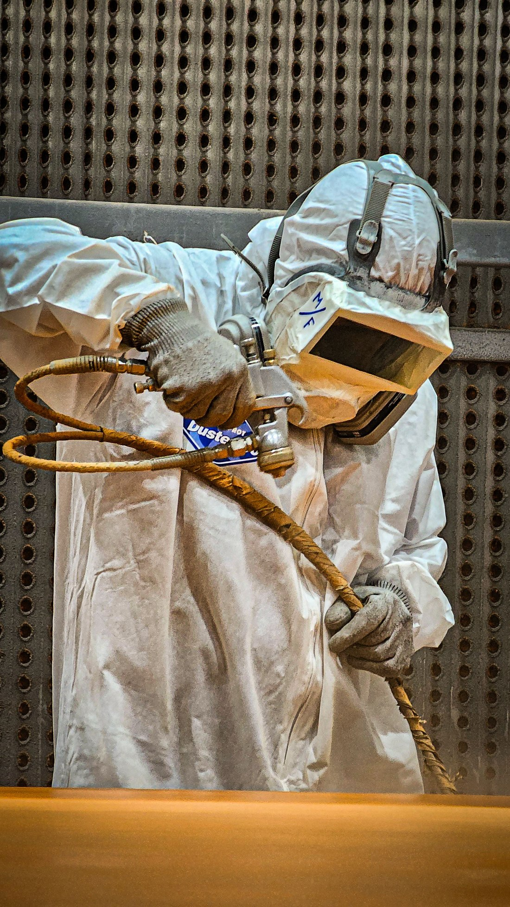

Seals, bushes and stanchion polishing — forks brought back to a proper working condition, not just wiped down and reassembled.

Forks are fully stripped, stanchions checked and polished or replaced if pitted, seals and bushes renewed, and oil changed to spec. A pitted stanchion left in place will chew through a new seal within weeks, so it's addressed properly rather than skipped.
Often paired with caliper refurbishment or a full restoration, since the forks are already off the bike at that point.
Tell us what you've got and what you need done — pricing and turnaround back to you directly.
Get a Quote